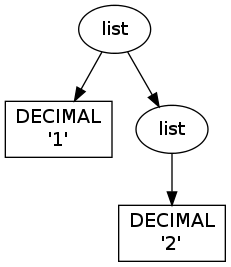
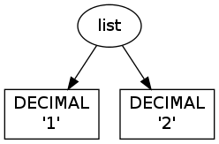

Generally Useful RPython Modules¶
Contents
This page lists some of the modules in rpython/rlib together with some hints for what they can be used for. The modules here will make up some general library useful for RPython programs (since most of the standard library modules are not RPython). Most of these modules are somewhat rough still and are likely to change at some point. Usually it is useful to look at the tests in rpython/rlib/test to get an impression of how to use a module.
listsort¶
The rpython/rlib/listsort.py module contains an implementation of the timsort sorting algorithm (the sort method of lists is not RPython). To use it, subclass from the listsort.TimSort class and override the lt method to change the comparison behaviour. The constructor of TimSort takes a list as an argument, which will be sorted in place when the sort method of the TimSort instance is called. Warning: currently only one type of list can be sorted using the listsort module in one program, otherwise the annotator will be confused.
nonconst¶
The rpython/rlib/nonconst.py module is useful mostly for tests. The flow object space and the annotator do quite some constant folding, which is sometimes not desired in a test. To prevent constant folding on a certain value, use the NonConst class. The constructor of NonConst takes an arbitrary value. The instance of NonConst will behave during annotation like that value, but no constant folding will happen.
objectmodel¶
The rpython/rlib/objectmodel.py module is a mixed bag of various functionality. Some of the more useful ones are:
- ComputedIntSymbolic:
- Instances of ComputedIntSymbolic are treated like integers of unknown value by the annotator. The value is determined by a no-argument function (which needs to be passed into the constructor of the class). When the backend emits code, the function is called to determine the value.
- CDefinedIntSymbolic:
- Instances of ComputedIntSymbolic are also treated like integers of unknown value by the annotator. When C code is emitted they will be represented by the attribute expr of the symbolic (which is also the first argument of the constructor).
- r_dict:
- An RPython dict-like object. The constructor of r_dict takes two functions: key_eq and key_hash which are used for comparing and hashing the entries in the dictionary.
- instantiate(cls):
- Instantiate class cls without calling __init__.
- we_are_translated():
- This function returns False when run on top of CPython, but the annotator thinks its return value is True. Therefore it can be used to do different things on top of CPython than after translation. This should be used extremely sparingly (mostly for optimizations or debug code).
- cast_object_to_weakaddress(obj):
- Returns a sort of “weak reference” to obj, just without any convenience. The weak address that it returns is not invalidated if the object dies, so you need to take care yourself to know when the object dies. Use with extreme care.
- cast_weakadress_to_object(obj):
- Inverse of the previous function. If the object died then a segfault will ensue.
- UnboxedValue:
- This is a class which should be used as a base class for a class which carries exactly one integer field. The class should have __slots__ with exactly one entry defined. After translation, instances of this class won’t be allocated but represented by tagged pointers*, that is pointers that have the lowest bit set.
rarithmetic¶
The rpython/rlib/rarithmetic.py module contains functionality to handle the small differences in the behaviour of arithmetic code in regular Python and RPython code. Most of them are already described in the coding guide
rbigint¶
The rpython/rlib/rbigint.py module contains a full RPython implementation of the Python long type (which itself is not supported in RPython). The rbigint class contains that implementation. To construct rbigint instances use the static methods fromint, frombool, fromfloat and fromdecimalstr. To convert back to other types use the methods toint, tobool, touint and tofloat. Since RPython does not support operator overloading, all the special methods of rbigint that would normally start and end with “__” have these underscores left out for better readability (so a.add(b) can be used to add two rbigint instances).
rrandom¶
The rpython/rlib/rrandom.py module contains an implementation of the mersenne twister random number generator. It contains one class Random which most importantly has a random method which returns a pseudo-random floating point number between 0.0 and 1.0.
rsocket¶
The rpython/rlib/rsocket.py module contains an RPython implementation of the functionality of the socket standard library with a slightly different interface. The difficulty with the Python socket API is that addresses are not “well-typed” objects: depending on the address family they are tuples, or strings, and so on, which is not suitable for RPython. Instead, rsocket contains a hierarchy of Address classes, in a typical static-OO-programming style.
streamio¶
The rpython/rlib/streamio.py contains an RPython stream I/O implementation (which was started by Guido van Rossum as sio.py in the CPython sandbox as a prototype for the upcoming new file implementation in Python 3000).
unroll¶
The rpython/rlib/unroll.py module most importantly contains the function unrolling_iterable which wraps an iterator. Looping over the iterator in RPython code will not produce a loop in the resulting flow graph but will unroll the loop instead.
parsing¶
The rpython/rlib/parsing/ module is a still in-development module to generate tokenizers and parsers in RPython. It is still highly experimental and only really used by the Prolog interpreter (although in slightly non-standard ways). The easiest way to specify a tokenizer/grammar is to write it down using regular expressions and simple EBNF format.
The regular expressions are implemented using finite automatons. The parsing engine uses packrat parsing, which has O(n) parsing time but is more powerful than LL(n) and LR(n) grammars.
Regular Expressions¶
The regular expression syntax is mostly a subset of the syntax of the re module. By default, non-special characters match themselves. If you concatenate regular expressions the result will match the concatenation of strings matched by the single regular expressions.
- |
- R|S matches any string that either matches R or matches S.
- *
- R* matches 0 or more repetitions of R.
- +
- R+ matches 1 or more repetitions of R.
- ?
- R? matches 0 or 1 repetition of R.
- (...)
- Parenthesis can be used to group regular expressions (note that in contrast to Python’s re module you cannot later match the content of this group).
- {m}
- R{m} matches exactly m repetitions of R.
- {m, n}
- R{m, n} matches between m and n repetitions of R (including m and n).
- []
- Matches a set of characters. The characters to be matched can be listed sequentially. A range of characters can be specified using -. For examples [ac-eg] matches the characters a, c, d, e and g. The whole set can be inverted by starting it with ^. So [^a] matches anything except a.
To parse a regular expression and to get a matcher for it, you can use the function make_runner(s) in the rpython.rlib.parsing.regexparse module. It returns a object with a recognize(input) method that returns True or False depending on whether input matches the string or not.
EBNF¶
To describe a tokenizer and a grammar the rpython.rlib.parsing.ebnfparse defines a syntax for doing that.
The syntax file contains a sequence or rules. Every rule either describes a regular expression or a grammar rule.
Regular expressions rules have the form:
NAME: "regex";
NAME is the name of the token that the regular expression produces (it has to consist of upper-case letters), regex is a regular expression with the syntax described above. One token name is special-cased: a token called IGNORE will be filtered out of the token stream before being passed on to the parser and can thus be used to match comments or non-significant whitespace.
Grammar rules have the form:
name: expansion_1 | expansion_2 | ... | expansion_n;
Where expansion_i is a sequence of nonterminal or token names:
symbol_1 symbol_2 symbol_3 ... symbol_n
This means that the nonterminal symbol name (which has to consist of lower-case letters) can be expanded into any of the expansions. The expansions can consist of a sequence of token names, nonterminal names or literals, which are strings in quotes that are matched literally.
An example to make this clearer:
IGNORE: " ";
DECIMAL: "0|[1-9][0-9]*";
additive: multitive "+" additive |
multitive;
multitive: primary "*" multitive |
primary;
primary: "(" additive ")" | DECIMAL;
This grammar describes the syntax of arithmetic impressions involving addition and multiplication. The tokenizer produces a stream of either DECIMAL tokens or tokens that have matched one of the literals “+”, “*”, “(” or ”)”. Any space will be ignored. The grammar produces a syntax tree that follows the precedence of the operators. For example the expression 12 + 4 * 5 is parsed into the following tree:
![digraph G{
"-1213931828" [label="additive"];
"-1213931828" -> "-1213951956";
"-1213951956" [label="multitive"];
"-1213951956" -> "-1213949172";
"-1213949172" [label="primary"];
"-1213949172" -> "-1213949812";
"-1213949812" [shape=box,label="DECIMAL\l'12'"];
"-1213931828" -> "-1213935220";
"-1213935220" [shape=box,label="__0_+\l'+'"];
"-1213931828" -> "-1213951316";
"-1213951316" [label="additive"];
"-1213951316" -> "-1213948180";
"-1213948180" [label="multitive"];
"-1213948180" -> "-1213951380";
"-1213951380" [label="primary"];
"-1213951380" -> "-1213951508";
"-1213951508" [shape=box,label="DECIMAL\l'4'"];
"-1213948180" -> "-1213948788";
"-1213948788" [shape=box,label="__1_*\l'*'"];
"-1213948180" -> "-1213951060";
"-1213951060" [label="multitive"];
"-1213951060" -> "-1213948980";
"-1213948980" [label="primary"];
"-1213948980" -> "-1213950420";
"-1213950420" [shape=box,label="DECIMAL\l'5'"];
}](_images/graphviz-ee745d10023a7aa10ca4305215aca27d1cf84bbc.png)
Parse Trees¶
The parsing process builds up a tree consisting of instances of Symbol and Nonterminal, the former corresponding to tokens, the latter to nonterminal symbols. Both classes live in the rpython/rlib/parsing/tree.py module. You can use the view() method Nonterminal instances to get a pygame view of the parse tree.
Symbol instances have the following attributes: symbol, which is the name of the token and additional_info which is the matched source.
Nonterminal instances have the following attributes: symbol is the name of the nonterminal and children which is a list of the children attributes.
Visitors¶
To write tree visitors for the parse trees that are RPython, there is a special baseclass RPythonVisitor in rpython/rlib/parsing/tree.py to use. If your class uses this, it will grow a dispatch(node) method, that calls an appropriate visit_<symbol> method, depending on the node argument. Here the <symbol> is replaced by the symbol attribute of the visited node.
For the visitor to be RPython, the return values of all the visit methods need to be of the same type.
Tree Transformations¶
As the tree of arithmetic example above shows, by default the parse tree contains a lot of nodes that are not really conveying useful information. To get rid of some of them, there is some support in the grammar format to automatically create a visitor that transforms the tree to remove the additional nodes. The simplest such transformation just removes nodes, but there are more complex ones.
The syntax for these transformations is to enclose symbols in expansions of a nonterminal by [...], <...> or >...<.
[symbol_1 symbol_2 ... symbol_n]¶
This will produce a transformer that completely removes the enclosed symbols from the tree.
Example:
IGNORE: " ";
n: "A" [","] n | "A";
Parsing the string “A, A, A” gives the tree:
![digraph G{
"-1213678004" [label="n"];
"-1213678004" -> "-1213681108";
"-1213681108" [shape=box,label="__0_A\n'A'"];
"-1213678004" -> "-1213681332";
"-1213681332" [shape=box,label="__1_,\n','"];
"-1213678004" -> "-1213837780";
"-1213837780" [label="n"];
"-1213837780" -> "-1213837716";
"-1213837716" [shape=box,label="__0_A\n'A'"];
"-1213837780" -> "-1213839476";
"-1213839476" [shape=box,label="__1_,\n','"];
"-1213837780" -> "-1213839956";
"-1213839956" [label="n"];
"-1213839956" -> "-1213840948";
"-1213840948" [shape=box,label="__0_A\n'A'"];
}](_images/graphviz-a463afdd16be9f36ce0f8f113414d6f097d809f0.png)
After transformation the tree has the ”,” nodes removed:
![digraph G{
"-1219325716" [label="n"];
"-1219325716" -> "-1219325844";
"-1219325844" [shape=box,label="__0_A\n'A'"];
"-1219325716" -> "-1219324372";
"-1219324372" [label="n"];
"-1219324372" -> "-1219325524";
"-1219325524" [shape=box,label="__0_A\n'A'"];
"-1219324372" -> "-1219324308";
"-1219324308" [label="n"];
"-1219324308" -> "-1219325492";
"-1219325492" [shape=box,label="__0_A\n'A'"];
}](_images/graphviz-054469a629d5849ecb01eaf7334cf9f12a6e02f9.png)
<symbol>¶
This will replace the parent with symbol. Every expansion can contain at most one symbol that is enclosed by <...>, because the parent can only be replaced once, obviously.
Example:
IGNORE: " ";
n: "a" "b" "c" m;
m: "(" <n> ")" | "d";
Parsing the string “a b c (a b c d)” gives the tree:
![digraph G{
"-1214029460" [label="n"];
"-1214029460" -> "-1214026452";
"-1214026452" [shape=box,label="__0_a\n'a'"];
"-1214029460" -> "-1214028276";
"-1214028276" [shape=box,label="__1_b\n'b'"];
"-1214029460" -> "-1214027316";
"-1214027316" [shape=box,label="__2_c\n'c'"];
"-1214029460" -> "-1214026868";
"-1214026868" [label="m"];
"-1214026868" -> "-1214140436";
"-1214140436" [shape=box,label="__3_(\n'('"];
"-1214026868" -> "-1214143508";
"-1214143508" [label="n"];
"-1214143508" -> "-1214141364";
"-1214141364" [shape=box,label="__0_a\n'a'"];
"-1214143508" -> "-1214141748";
"-1214141748" [shape=box,label="__1_b\n'b'"];
"-1214143508" -> "-1214140756";
"-1214140756" [shape=box,label="__2_c\n'c'"];
"-1214143508" -> "-1214144468";
"-1214144468" [label="m"];
"-1214144468" -> "-1214414868";
"-1214414868" [shape=box,label="__5_d\n'd'"];
"-1214026868" -> "-1214141492";
"-1214141492" [shape=box,label="__4_)\n')'"];
}](_images/graphviz-d095b626dde0be0b6a793afed07e277fc42800f9.png)
After transformation the tree looks like this:
![digraph G{
"-1219949908" [label="n"];
"-1219949908" -> "-1214026452";
"-1214026452" [shape=box,label="__0_a\n'a'"];
"-1219949908" -> "-1214028276";
"-1214028276" [shape=box,label="__1_b\n'b'"];
"-1219949908" -> "-1214027316";
"-1214027316" [shape=box,label="__2_c\n'c'"];
"-1219949908" -> "-1219949876";
"-1219949876" [label="n"];
"-1219949876" -> "-1214141364";
"-1214141364" [shape=box,label="__0_a\n'a'"];
"-1219949876" -> "-1214141748";
"-1214141748" [shape=box,label="__1_b\n'b'"];
"-1219949876" -> "-1214140756";
"-1214140756" [shape=box,label="__2_c\n'c'"];
"-1219949876" -> "-1219949748";
"-1219949748" [label="m"];
"-1219949748" -> "-1214414868";
"-1214414868" [shape=box,label="__5_d\n'd'"];
}](_images/graphviz-98fd64cd3808bc4e8fc34b3af13cf45707223068.png)
>nonterminal_1 nonterminal_2 ... nonterminal_n<¶
This replaces the nodes nonterminal_1 to nonterminal_n by their children.
Example:
IGNORE: " ";
DECIMAL: "0|[1-9][0-9]*";
list: DECIMAL >list< | DECIMAL;
Parsing the string “1 2” gives the tree:

after the transformation the tree looks like:

Note that the transformation works recursively. That means that the following also works: if the string “1 2 3 4 5” is parsed the tree at first looks like this:
![digraph G{
"-1213611892" [label="list"];
"-1213611892" -> "-1213608980";
"-1213608980" [shape=box,label="DECIMAL\n'1'"];
"-1213611892" -> "-1213623476";
"-1213623476" [label="list"];
"-1213623476" -> "-1213623380";
"-1213623380" [shape=box,label="DECIMAL\n'2'"];
"-1213623476" -> "-1213442868";
"-1213442868" [label="list"];
"-1213442868" -> "-1213441652";
"-1213441652" [shape=box,label="DECIMAL\n'3'"];
"-1213442868" -> "-1213441332";
"-1213441332" [label="list"];
"-1213441332" -> "-1213441620";
"-1213441620" [shape=box,label="DECIMAL\n'4'"];
"-1213441332" -> "-1213443060";
"-1213443060" [label="list"];
"-1213443060" -> "-1213442100";
"-1213442100" [shape=box,label="DECIMAL\n'5'"];
}](_images/graphviz-ddca13bfd8c0a99125b7aad0f8bda3cbcc1ee21f.png)
But after transformation the whole thing collapses to one node with a lot of children:
![digraph G{
"-1219430228" [label="list"];
"-1219430228" -> "-1213608980";
"-1213608980" [shape=box,label="DECIMAL\n'1'"];
"-1219430228" -> "-1213623380";
"-1213623380" [shape=box,label="DECIMAL\n'2'"];
"-1219430228" -> "-1213441652";
"-1213441652" [shape=box,label="DECIMAL\n'3'"];
"-1219430228" -> "-1213441620";
"-1213441620" [shape=box,label="DECIMAL\n'4'"];
"-1219430228" -> "-1213442100";
"-1213442100" [shape=box,label="DECIMAL\n'5'"];
}](_images/graphviz-6c49b86525268668c887d405d30c7d247485aa8c.png)
Extensions to the EBNF grammar format¶
There are some extensions to the EBNF grammar format that are really only syntactic sugar but make writing grammars less tedious. These are:
- symbol?:
- matches 0 or 1 repetitions of symbol
- symbol*:
- matches 0 or more repetitions of symbol. After the tree transformation all these repetitions are children of the current symbol.
- symbol+:
- matches 1 or more repetitions of symbol. After the tree transformation all these repetitions are children of the current symbol.
These are implemented by adding some more rules to the grammar in the correct way. Examples: the grammar:
s: a b? c;
is transformed to look like this:
s: a >_maybe_symbol_0_< c | a c;
_maybe_symbol_0_: b;
The grammar:
s: a b* c;
is transformed to look like this:
s: a >_star_symbol_0< c | a c;
_star_symbol_0: b >_symbol_star_0< | b;
The grammar:
s: a b+ c;
is transformed to look like this:
s: a >_plus_symbol_0< c;
_plus_symbol_0: b >_plus_symbol_0< | b;
Full Example¶
A semi-complete parser for the json format:
STRING: "\\"[^\\\\"]*\\"";
NUMBER: "\-?(0|[1-9][0-9]*)(\.[0-9]+)?([eE][\+\-]?[0-9]+)?";
IGNORE: " |\n";
value: <STRING> | <NUMBER> | <object> | <array> | <"null"> |
<"true"> | <"false">;
object: ["{"] (entry [","])* entry ["}"];
array: ["["] (value [","])* value ["]"];
entry: STRING [":"] value;
The resulting tree for parsing the string:
{"a": "5", "b": [1, null, 3, true, {"f": "g", "h": 6}]}
looks like this:
![digraph G{
"-1220061652" [label="object"];
"-1220061652" -> "-1220127636";
"-1220127636" [label="entry"];
"-1220127636" -> "-1213915636";
"-1213915636" [shape=box,label="STRING\n'a'"];
"-1220127636" -> "-1214251156";
"-1214251156" [shape=box,label="STRING\n'5'"];
"-1220061652" -> "-1220063188";
"-1220063188" [label="entry"];
"-1220063188" -> "-1214253076";
"-1214253076" [shape=box,label="STRING\n'b'"];
"-1220063188" -> "-1220059444";
"-1220059444" [label="array"];
"-1220059444" -> "-1214253364";
"-1214253364" [shape=box,label="NUMBER\n'1'"];
"-1220059444" -> "-1214254292";
"-1214254292" [shape=box,label="__0_null\n'null'"];
"-1220059444" -> "-1214253268";
"-1214253268" [shape=box,label="NUMBER\n'3'"];
"-1220059444" -> "-1214252596";
"-1214252596" [shape=box,label="__1_true\n'true'"];
"-1220059444" -> "-1220062260";
"-1220062260" [label="object"];
"-1220062260" -> "-1220060116";
"-1220060116" [label="entry"];
"-1220060116" -> "-1214211860";
"-1214211860" [shape=box,label="STRING\n'f'"];
"-1220060116" -> "-1214210132";
"-1214210132" [shape=box,label="STRING\n'g'"];
"-1220062260" -> "-1220062868";
"-1220062868" [label="entry"];
"-1220062868" -> "-1214211956";
"-1214211956" [shape=box,label="STRING\n'h'"];
"-1220062868" -> "-1214212308";
"-1214212308" [shape=box,label="NUMBER\n'6'"];
}](_images/graphviz-a8875dd8990d410413ce17c684a6cecf2dc3a6ce.png)